Sphinx の動作環境を作る¶
Windows 上に Sphinx の実行環境を構築します。必要なアプリケーションです。
Sphinx
テキストエディター
テキストエディターは UTF-8 が扱えるものであれば何でも良いです。
Miniconda をインストールする¶
ブラウザーでMinicondaのページを開く →
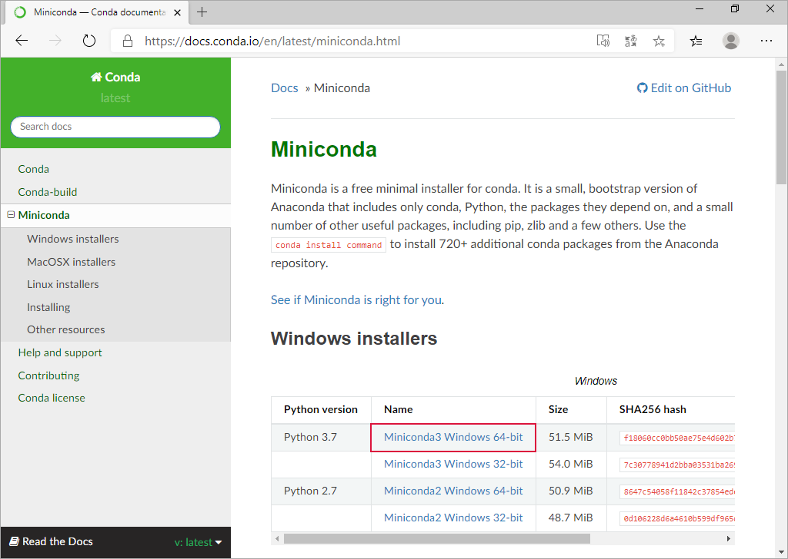Miniconda3 Windows 64-bitをクリック
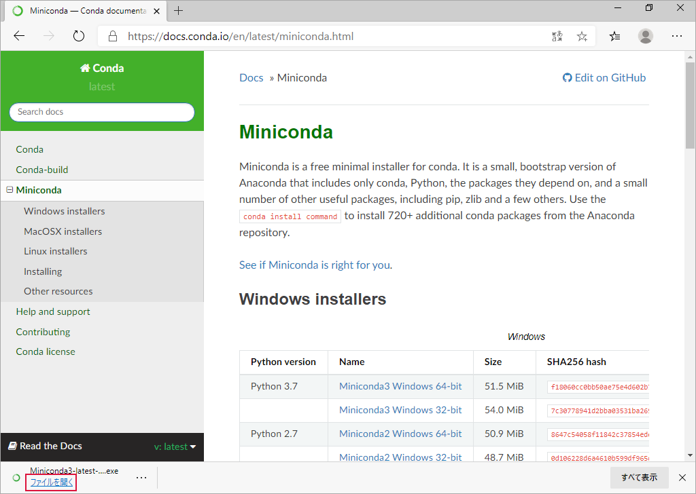ファイルを開くをクリックNextをクリック
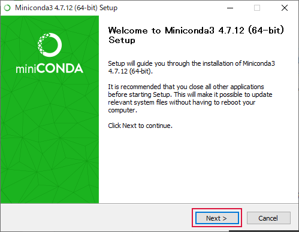I Agreeをクリック
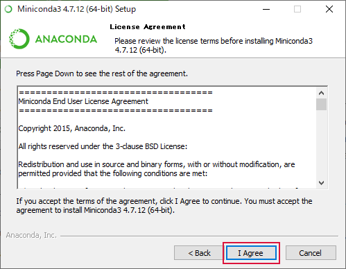Nextをクリック
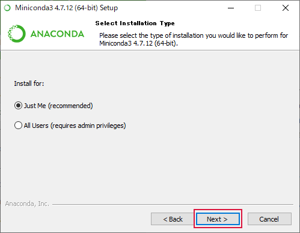Nextをクリック
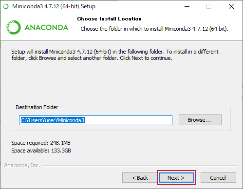Installをクリック
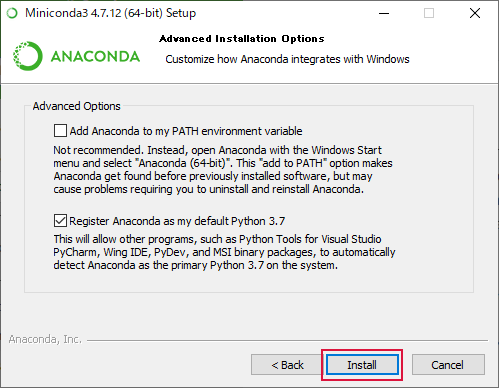インストール中
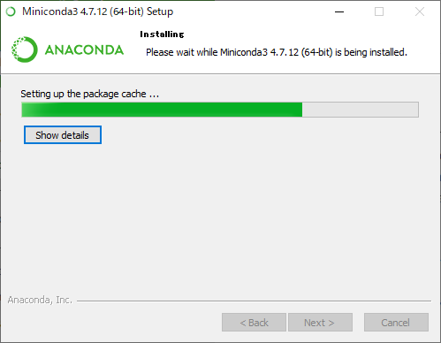Nextをクリック
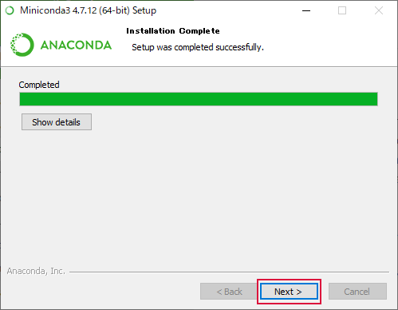
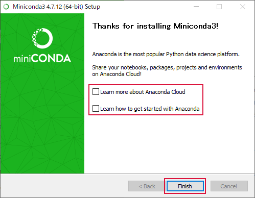Learn more ・・・とLearn how ・・・のチェックを外す →FinishをクリックMiniconda のインストールが終了するとメニューに "Anaconda Powershell Prompt(Miniconda3)" と "Anaconda Prompt(Miniconda3)" が登録されます
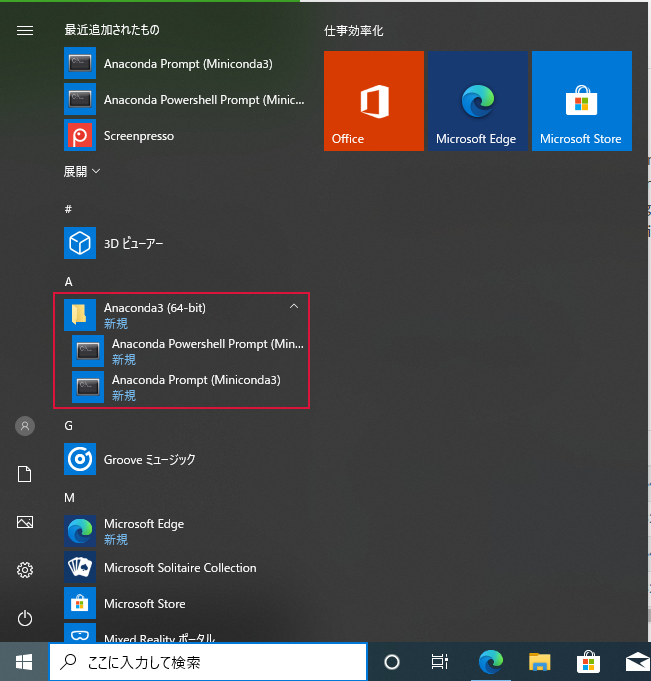
Sphinx をインストールする¶
"Anaconda Powershell Prompt(Miniconda3)" を起動
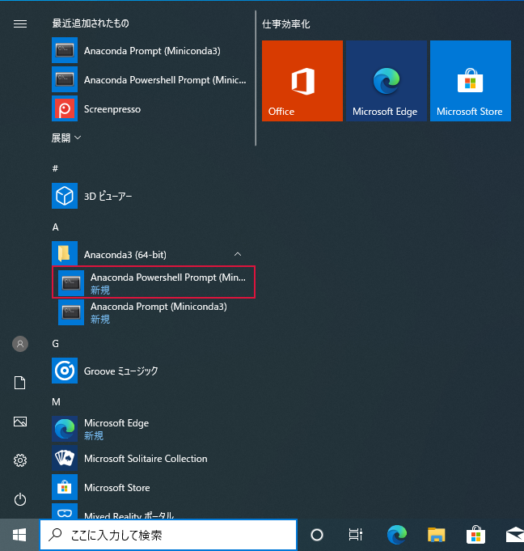Sphinx をインストール
pip install -U Sphinx
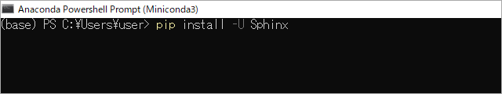 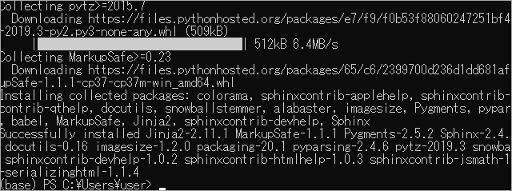Sphinx のバージョン確認
pip show sphinx
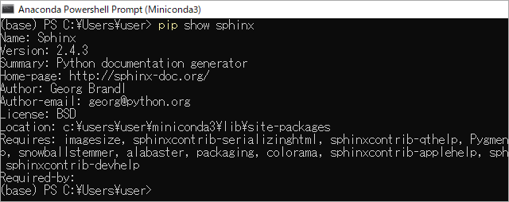
テキストエディターをインストールする¶
UTF-8 を扱えるテキストエディターであれば何でも良いです。ここでは Visual Studio Code を紹介します。
ブラウザーでVisual Studio Code – コード エディター | Microsoft Azureのページを開く →
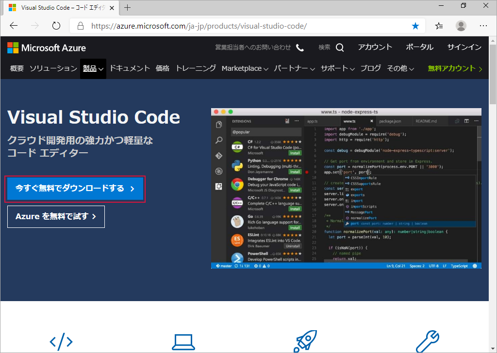今すぐ無料でダウンロードするをクリックWindows 用の
64 bitをクリック※ この手順では System Installer を使用しています。
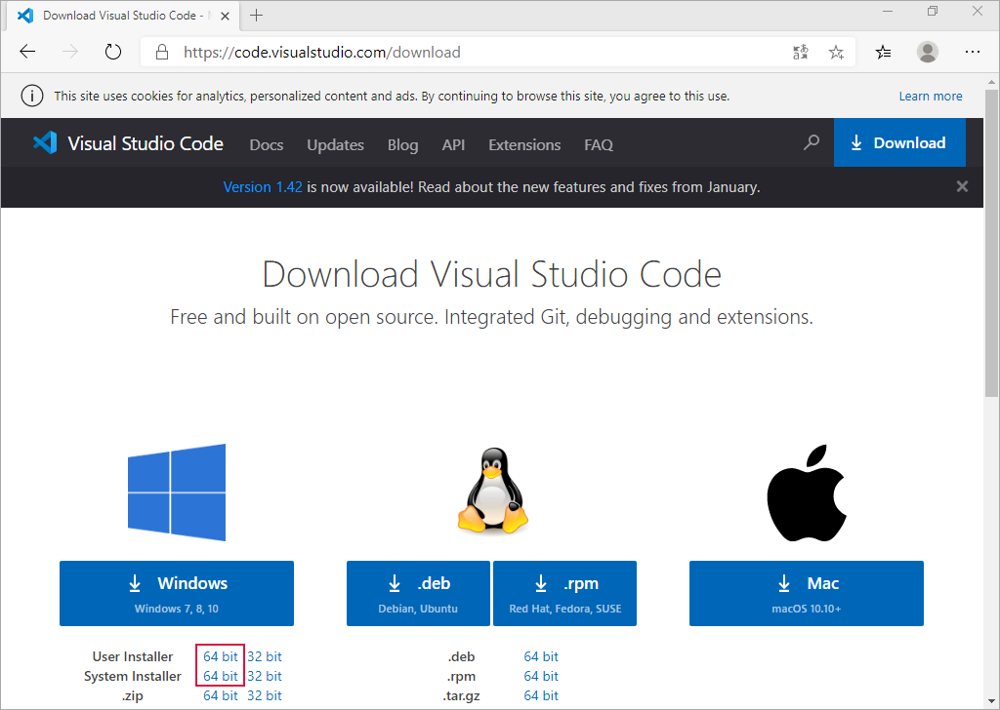注釈
インストールするパソコンを自分だけが使用しているのであれば User Installer / System Installer のどちらでも変わりはないです。
インストールするパソコンを他の方と共同で使用しているのであれば使用環境（条件）によりますが User Installer が望ましいと思います。
- User Installer
インストールしたユーザーだけが使用できる
Windows にログイン中のユーザーの領域 ( "%HOMEPATH%" フォルダー内 )にインストールする
- System Installer
誰でも使用できる
"C:Program Files" フォルダー内にインストールする
インストール時に管理者権限が必要
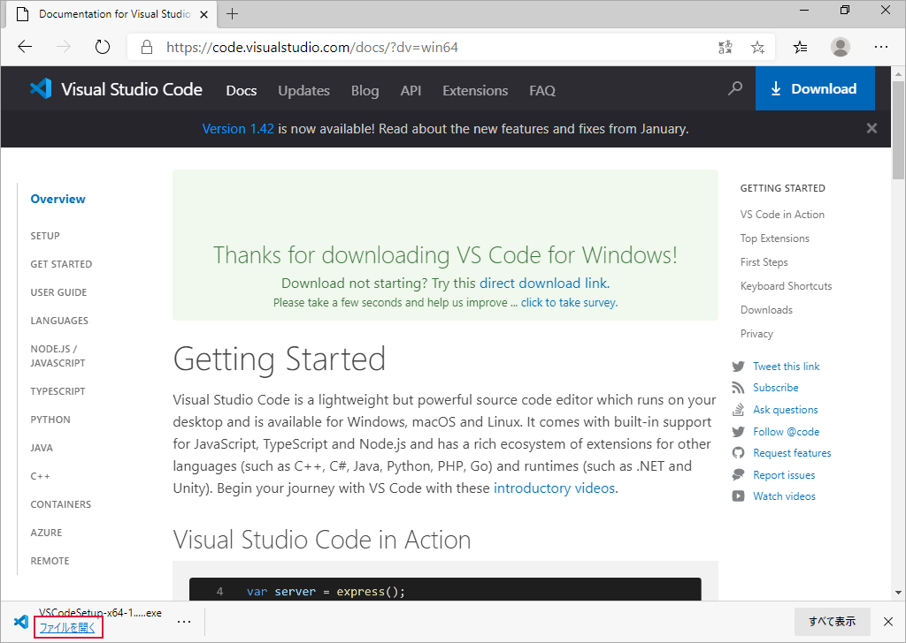ファイルを開くをクリック
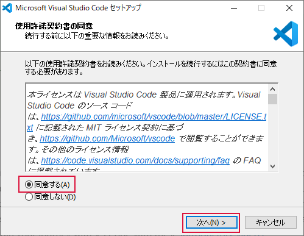同意する(A)を選択 →次へ(N)をクリック次へ(N)をクリック
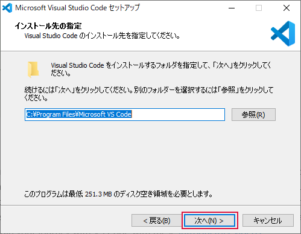次へ(N)をクリック
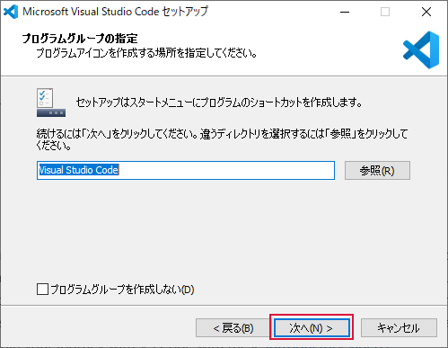追加タスクは必要なものをチェック →次へ(N)をクリック
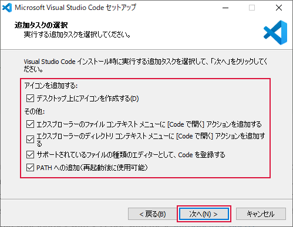インストール(I)をクリック
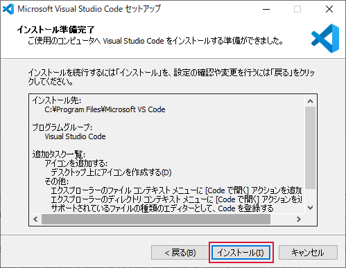インストール中
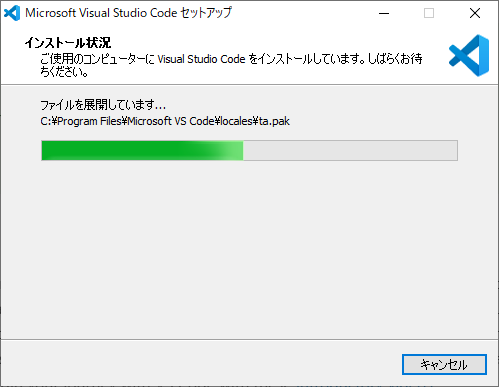
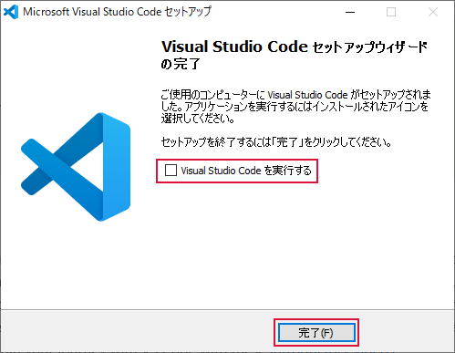Visual Studio Code を実行するのチェックを外す →完了(F)をクリックインストールが終了するとメニューに "Visual Studio Code" が登録されます
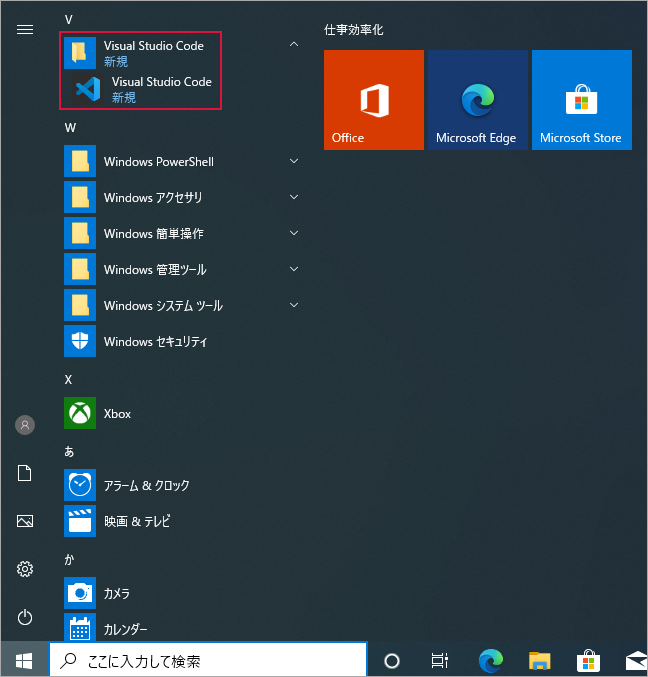